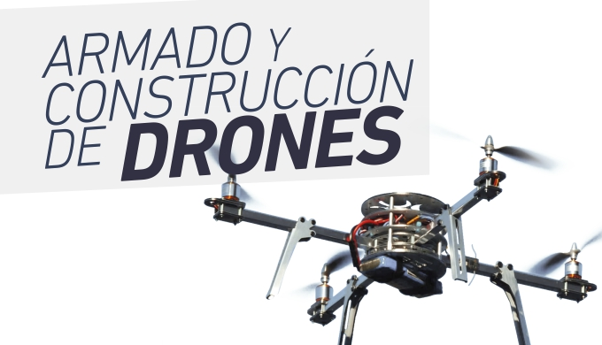

Jóvenes y niños a partir de los 6 años, de forma invididual o a través de su institución educativa.
Reuniones semanales (06 horas académicas por semana) con aulas prácticas para grupos de 10 estudiantes.
